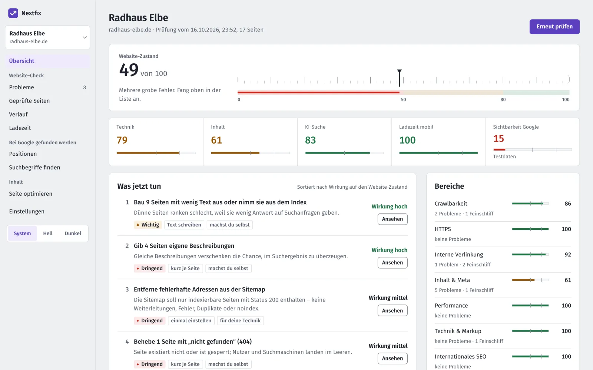
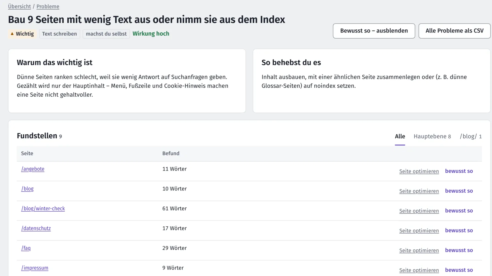
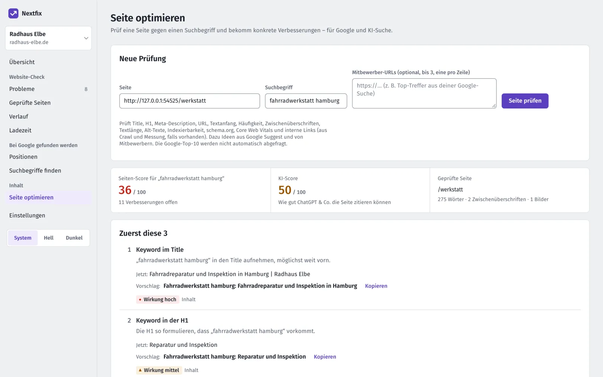

Was deine Website als Nächstes braucht.
Nextfix prüft deine Website und macht daraus eine kurze Liste: was zuerst dran ist, warum und wie. Ein kostenloses Open-Source-SEO-Tool für deinen Mac.
Was jetzt tun
1 von 4 erledigt
-
1Bau 9 Seiten mit wenig Text aus oder nimm sie aus dem Index
Dünne Seiten ranken schlecht, weil sie wenig Antwort auf Suchanfragen geben.
Wirkung hoch
-
2Gib 4 Seiten eigene Beschreibungen
Gleiche Beschreibungen verschenken die Chance, im Suchergebnis zu überzeugen.
Wirkung hoch
-
3Entferne fehlerhafte Adressen aus der Sitemap
Die Sitemap soll nur indexierbare Seiten mit Status 200 enthalten.
Wirkung mittel
-
4Behebe 1 Seite mit „nicht gefunden“ (404)
Seite existiert nicht oder ist gesperrt; Nutzer und Suchmaschinen landen im Leeren.
Wirkung mittel
-
Erledigt? Dann prüf noch mal.
Große SEO-Tools zeigen dir Hunderte Warnungen. Nextfix sagt dir, was zuerst dran ist.
Jede Aufgabe erklärt, warum sie zählt, wie du sie behebst und ob du das selbst im CMS erledigst oder dein Webbetreuer ran muss.



Prüf deinen Seitentitel, jetzt gleich.
Zwei der 20 Regeln aus „Seite optimieren“ plus Vorschlag, hier in deinem Browser gerechnet. Was du eintippst, verlässt deinen Rechner nicht. Beispiele erfunden.
So läuft eine Runde
Was Nextfix kann
- Website-Check. 106 Prüfungen zu Technik und Inhalt, eine Zahl für den Zustand und die Liste „Was jetzt tun“.
- Ladezeit. Wie schnell deine Seiten auf einem simulierten Handy laden, gemessen auf deinem Rechner.
- Google-Positionen. Deine Plätze und Klicks aus der Search Console und von Bing, sobald du sie einrichtest.
- Suchbegriffe finden. Ideen, wonach deine Kunden suchen, aus den Vorschlägen beim Tippen.
- Seite optimieren. Für eine Seite und einen Suchbegriff: was du an Titel und Text änderst.
- KI-Suche. Ob ChatGPT, Claude und Co. deine Seite lesen und verstehen können.
Dazu Berichte als PDF und CSV, ein Vergleich deiner Domain mit der Konkurrenz und 50 Werkzeuge, mit denen Claude Nextfix für dich bedient. Alle Funktionen ansehen
106 Prüfungen, zum Beispiel
- kaputte Seiten und Links
- fehlende oder doppelte Seitentitel
- Seiten mit wenig Text
- Bilder ohne Beschreibung
- zu langsam auf dem Handy
- springendes Layout beim Laden
- kein HTTPS oder ablaufende Zertifikate
- fehlende Sitemap
- Seiten, die niemand verlinkt
- gesperrte KI-Suchdienste
Alle Prüfungen und wie Nextfix sie gewichtet: Website-Check
Bevor du anfängst
Kostet Nextfix wirklich nichts?
Ja. Der Quellcode ist offen (MIT-Lizenz), es gibt kein Abo und keine bezahlten Schnittstellen. Die Daten kommen von deiner Website, aus der Google Search Console und von Bing, beide kostenlos.
Muss ich programmieren können?
Nein. Zum Installieren fügst du ein paar Befehle ins Terminal ein, oder dein Webbetreuer macht das. Zum Starten tippst du danach jedes Mal einen Befehl ein, bedient wird Nextfix dann im Browser. Die Anleitung erklärt jeden Schritt.
Läuft das auch unter Windows?
Nextfix wird auf dem Mac entwickelt und getestet. Mit Python 3.12 sollte es auch unter Windows und Linux laufen, ausprobiert ist das aber noch nicht.
Wohin gehen meine Daten?
Deine Ergebnisse bleiben auf deinem Rechner, in einer einzigen Datei. Nach außen geht nur, was für eine Abfrage nötig ist: Nextfix ruft deine Website ab, holt Vorschläge bei Google und, wenn du es einrichtest, Daten von Search Console, Bing und Open PageRank. Kein Konto bei Nextfix, kein Tracking.
Was kann Nextfix nicht?
Es zeigt keine Positionen deiner Konkurrenz und keine einzelnen Backlinks, dafür bräuchte es bezahlte Datenbanken. Die Ladezeit misst es im Labor auf deinem Rechner, nicht bei echten Besuchern.
Ersetzt Nextfix eine Agentur?
Nein. Nextfix sagt dir, was zu tun ist und ob du es selbst im CMS erledigen kannst oder dein Webbetreuer ran muss. Die Arbeit selbst bleibt bei euch. Dafür weißt du genau, was du beauftragst.